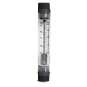
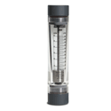

Blue-White
Harrington is a Supplier of high-quality Blue-White flowmeters. Blue-white flowmeters are used to measure fluid passing through, ensuring fluid control processes run smoothly, safely, and cost-effectively. Our meters support a wide range of material connection types, including: CPVC, PVDF, brass, polypropylene, acrylic, and PVC. Select your product to request a quote, get additional information, and purchasing options.

Blue-White Series F-420N Flowmeter, 8 to 40 GPM / 30 to 150 LPM, 1" Female NPT PVC Adapter, 316 Stainless Steel Float, 316 Stainless Steel Guide Rod, 100mm Scaleper EA · Sign in for price- Blue-White Series F-420N Flowmeter, 10 to 50 GPM / 40 to 200 LPM, 1-1/2" Male NPT PVC Adapter, Hastelloy® C-276 Float, Hastelloy® C-276 Guide Rod, 100mm Scaleper EA · Sign in for price
- Blue-White Series F-420N Flowmeter, 10 to 50 GPM / 40 to 200 LPM, 1-1/2" Male NPT PVC Adapter, 316 Stainless Steel Float, 316 Stainless Steel Guide Rod, 100mm Scaleper EA · Sign in for price
- Blue-White Series F-420N Flowmeter, 10 to 50 GPM / 40 to 200 LPM, 1" Female NPT PVC Adapter, 316 Stainless Steel Float, 316 Stainless Steel Guide Rod, 100mm Scaleper EA · Sign in for price

Blue-White Series F-430N Flowmeter, 4 to 40 GPM / 15 to 150 LPM, 2" Female NPT PVC Adapter, 316 Stainless Steel Float, 316 Stainless Steel Guide Rod, 127mm Scaleper EA · Sign in for price- Blue-White Series F-430N Flowmeter, 4 to 40 GPM / 15 to 150 LPM, 1-1/2" Female NPT PVC Adapter, 316 Stainless Steel Float, 316 Stainless Steel Guide Rod, 127mm Scaleper EA · Sign in for price
- Blue-White Series F-430N Flowmeter, 6 to 60 GPM / 20 to 230 LPM, 2" Female NPT PVC Adapter, 316 Stainless Steel Float, 316 Stainless Steel Guide Rod, 127mm Scaleper EA · Sign in for price
- Blue-White Series F-430N Flowmeter, 6 to 60 GPM / 20 to 230 LPM, 1-1/2" Female NPT PVC Adapter, 316 Stainless Steel Float, 316 Stainless Steel Guide Rod, 127mm Scaleper EA · Sign in for price
- Blue-White Series F-430N Flowmeter, 8 to 80 GPM / 30 to 300 LPM, 2" Female NPT PVC Adapter, 316 Stainless Steel Float, 316 Stainless Steel Guide Rod, 127mm Scaleper EA · Sign in for price
- Blue-White Series F-430N Flowmeter, 8 to 80 GPM / 30 to 300 LPM, 1-1/2" Female NPT PVC Adapter, 316 Stainless Steel Float, 316 Stainless Steel Guide Rod, 127mm Scaleper EA · Sign in for price
- Blue-White Series F-430N Flowmeter, 20 to 100 GPM / 75 to 375 LPM, 2" Female NPT PVC Adapter, 316 Stainless Steel Float, 316 Stainless Steel Guide Rod, 127mm Scaleper EA · Sign in for price
- Blue-White Series F-430N Flowmeter, 20 to 100 GPM / 75 to 375 LPM, 1-1/2" Female NPT PVC Adapter, 316 Stainless Steel Float, 316 Stainless Steel Guide Rod, 127mm Scaleper EA · Sign in for price
 Blue-White Series F-440 Flowmeter, In-line Mount, 0.025 to 0.250 GPM / 0.1 to 1.0 LPM, 3/8" Male NPT, PVDF Float, 316 Stainless Steel Guide Rod, 2" Scale (approximate)per EA · Sign in for price
Blue-White Series F-440 Flowmeter, In-line Mount, 0.025 to 0.250 GPM / 0.1 to 1.0 LPM, 3/8" Male NPT, PVDF Float, 316 Stainless Steel Guide Rod, 2" Scale (approximate)per EA · Sign in for price- Blue-White Series F-440 Flowmeter, In-line Mount, 0.025 to 0.250 GPM / 0.1 to 1.0 LPM, 1/2" Male NPT, PVDF Float, 316 Stainless Steel Guide Rod, 2" Scale (approximate)per EA · Sign in for price
 Blue-White Series F-440 Flowmeter, Adjustable Panel Mount, 0.025 to 0.250 GPM / 0.1 to 1.0 LPM, 3/8" Male NPT, PVDF Float, 316 Stainless Steel Guide Rod, 2" Scale (approximate)per EA · Sign in for price
Blue-White Series F-440 Flowmeter, Adjustable Panel Mount, 0.025 to 0.250 GPM / 0.1 to 1.0 LPM, 3/8" Male NPT, PVDF Float, 316 Stainless Steel Guide Rod, 2" Scale (approximate)per EA · Sign in for price- Blue-White Series F-440 Flowmeter, Adjustable Panel Mount, 0.025 to 0.250 GPM / 0.1 to 1.0 LPM, 1/2" Male NPT, PVDF Float, 316 Stainless Steel Guide Rod, 2" Scale (approximate)per EA · Sign in for price
 Blue-White Series F-440 Flowmeter, Panel Mount, 0.025 to 0.250 GPM / 0.1 to 1.0 LPM, 3/8" Male NPT, PVDF Float, 316 Stainless Steel Guide Rod, 2" Scale (approximate)per EA · Sign in for price
Blue-White Series F-440 Flowmeter, Panel Mount, 0.025 to 0.250 GPM / 0.1 to 1.0 LPM, 3/8" Male NPT, PVDF Float, 316 Stainless Steel Guide Rod, 2" Scale (approximate)per EA · Sign in for price- Blue-White Series F-440 Flowmeter, Panel Mount, 0.025 to 0.250 GPM / 0.1 to 1.0 LPM, 1/2" Male NPT, PVDF Float, 316 Stainless Steel Guide Rod, 2" Scale (approximate)per EA · Sign in for price
- Blue-White Series F-440 Flowmeter, In-Line Mount, 0.1 to 1.0 GPM / 0.4 to 4.0 LPM, 3/8" Male NPT, 316 Stainless Steel Float, 316 Stainless Steel Guide Rod, 2" Scale (approximate)per EA · Sign in for price
- Blue-White Series F-440 Flowmeter, In-Line Mount, 0.1 to 1.0 GPM / 0.4 to 4.0 LPM, 1/2" Male NPT, 316 Stainless Steel Float, 316 Stainless Steel Guide Rod, 2" Scale (approximate)per EA · Sign in for price
- Blue-White Series F-440 Flowmeter, Adjustable Panel Mount, 0.1 to 1.0 GPM / 0.4 to 4.0 LPM, 3/8" Male NPT, 316 Stainless Steel Float, 316 Stainless Steel Guide Rod, 2" Scale (approximate)per EA · Sign in for price
- Blue-White Series F-440 Flowmeter, Adjustable Panel Mount, 0.1 to 1.0 GPM / 0.4 to 4.0 LPM, 1/2" Male NPT, 316 Stainless Steel Float, 316 Stainless Steel Guide Rod, 2" Scale (approximate)per EA · Sign in for price
- Blue-White Series F-440 Flowmeter, Panel Mount, 0.1 to 1.0 GPM / 0.4 to 4.0 LPM, 3/8" Male NPT, 316 Stainless Steel Float, 316 Stainless Steel Guide Rod, 2" Scale (approximate)per EA · Sign in for price
- Blue-White Series F-440 Flowmeter, In-Line Mount, 0.2 to 2.0 GPM / 0.8 to 8.0 LPM, 3/8" Male NPT, 316 Stainless Steel Float, 316 Stainless Steel Guide Rod, 2" Scale (approximate)per EA · Sign in for price
- Blue-White Series F-440 Flowmeter, In-Line Mount, 0.2 to 2.0 GPM / 0.8 to 8.0 LPM, 1/2" Male NPT, 316 Stainless Steel Float, 316 Stainless Steel Guide Rod, 2" Scale (approximate)per EA · Sign in for price
- Blue-White Series F-440 Flowmeter, Adjustable Panel Mount, 0.2 to 2.0 GPM / 0.8 to 8.0 LPM, 3/8" Male NPT, 316 Stainless Steel Float, 316 Stainless Steel Guide Rod, 2" Scale (approximate)per EA · Sign in for price
- Blue-White Series F-440 Flowmeter, Adjustable Panel Mount, 0.2 to 2.0 GPM / 0.8 to 8.0 LPM, 1/2" Male NPT, 316 Stainless Steel Float, 316 Stainless Steel Guide Rod, 2" Scale (approximate)per EA · Sign in for price
- Blue-White Series F-440 Flowmeter, Panel Mount, 0.2 to 2.0 GPM / 0.8 to 8.0 LPM, 3/8" Male NPT, 316 Stainless Steel Float, 316 Stainless Steel Guide Rod, 2" Scale (approximate)per EA · Sign in for price
- Blue-White Series F-440 Flowmeter, Panel Mount, 0.2 to 2.0 GPM / 0.8 to 8.0 LPM, 1/2" Male NPT, 316 Stainless Steel Float, 316 Stainless Steel Guide Rod, 2" Scale (approximate)per EA · Sign in for price
- Blue-White Series F-440 Flowmeter, In-Line Mount, 0.5 to 5.0 GPM / 1.8 to 18.0 LPM, 3/8" Male NPT, 316 Stainless Steel Float, 316 Stainless Steel Guide Rod, 2" Scale (approximate)per EA · Sign in for price
- Blue-White Series F-440 Flowmeter, In-Line Mount, 0.5 to 5.0 GPM / 1.8 to 18.0 LPM, 1/2" Male NPT, 316 Stainless Steel Float, 316 Stainless Steel Guide Rod, 2" Scale (approximate)per EA · Sign in for price
- Blue-White Series F-440 Flowmeter, Adjustable Panel Mount, 0.5 to 5.0 GPM / 1.8 to 18.0 LPM, 3/8" Male NPT, 316 Stainless Steel Float, 316 Stainless Steel Guide Rod, 2" Scale (approximate)per EA · Sign in for price
- Blue-White Series F-440 Flowmeter, Adjustable Panel Mount, 0.5 to 5.0 GPM / 1.8 to 18.0 LPM, 1/2" Male NPT, 316 Stainless Steel Float, 316 Stainless Steel Guide Rod, 2" Scale (approximate)per EA · Sign in for price
- Blue-White Series F-440 Flowmeter, Panel Mount, 0.5 to 5.0 GPM / 1.8 to 18.0 LPM, 3/8" Male NPT, 316 Stainless Steel Float, 316 Stainless Steel Guide Rod, 2" Scale (approximate)per EA · Sign in for price
- Blue-White Series F-440 Flowmeter, Panel Mount, 0.5 to 5.0 GPM / 1.8 to 18.0 LPM, 1/2" Male NPT, 316 Stainless Steel Float, 316 Stainless Steel Guide Rod, 2" Scale (approximate)per EA · Sign in for price
- Blue-White Series F-440 Flowmeter, In-Line Mount, 5.0 to 60.0 GPH / 20 to 220 LPH, 3/8" Male NPT, 316 Stainless Steel Float, 316 Stainless Steel Guide Rod, 2" Scale (approximate)per EA · Sign in for price
- Blue-White Series F-440 Flowmeter, In-Line Mount, 5.0 to 60.0 GPH / 20 to 220 LPH, 1/2" Male NPT, 316 Stainless Steel Float, 316 Stainless Steel Guide Rod, 2" Scale (approximate)per EA · Sign in for price
- Blue-White Series F-440 Flowmeter, Adjustable Panel Mount, 5.0 to 60.0 GPH / 20 to 220 LPH, 1/2" Male NPT, 316 Stainless Steel Float, 316 Stainless Steel Guide Rod, 2" Scale (approximate)per EA · Sign in for price
- Blue-White Series F-440 Flowmeter, Panel Mount, 5.0 to 60.0 GPH / 20 to 220 LPH, 1/2" Male NPT, 316 Stainless Steel Float, 316 Stainless Steel Guide Rod, 2" Scale (approximate)per EA · Sign in for price
- Blue-White Series F-440 Flowmeter, In-Line Mount, 1.0 to 10.0 GPM / 5.0 to 37.5 LPM, 3/4" Male NPT, 316 Stainless Steel Float, 316 Stainless Steel Guide Rod, 2" Scale (approximate)per EA · Sign in for price